Ciudad de México — Lobby
Una piel de luz que ancla a Mikko en el edificio. Inspirada en el lenguaje de la arquitectura y de la escultura contigua, la instalación del lobby es un mosaico en constante cambio, materializada en paneles de Corian, cada uno tallado a distintas profundidades y densidades, cada uno montado en un ángulo diferente. Las variaciones en el tallado alteran la translucidez de la superficie, de modo que la luz que la atraviesa nunca es uniforme. El edificio y la escultura se combinan en una obra.
Corian — LED
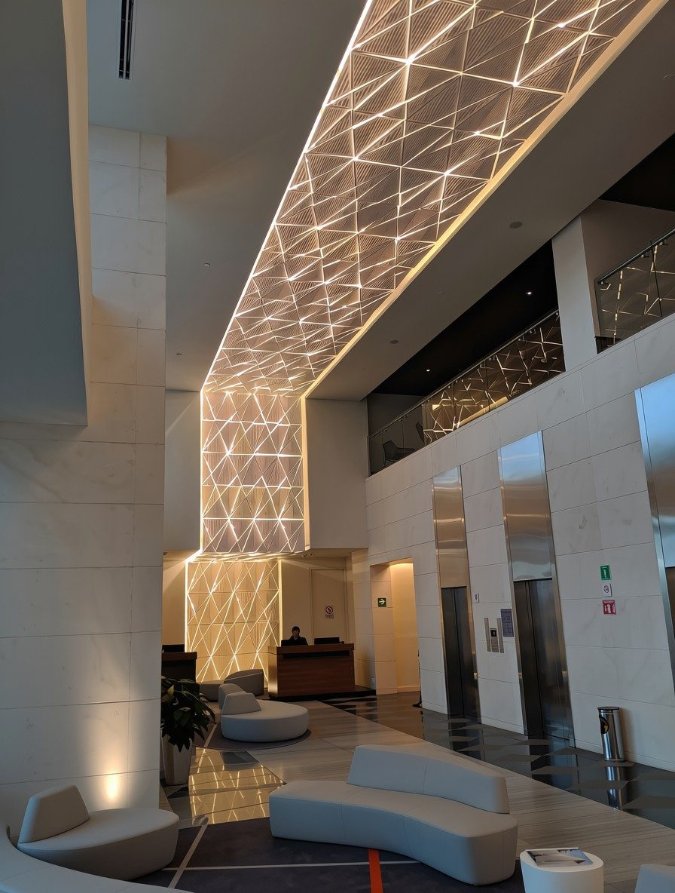
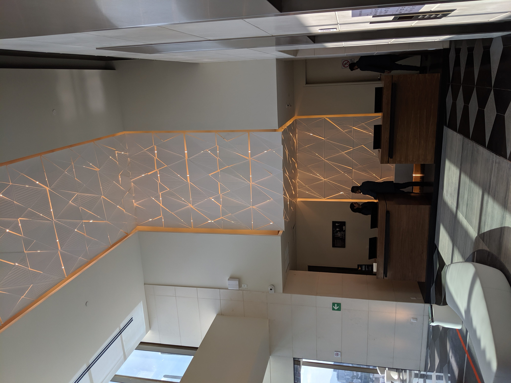

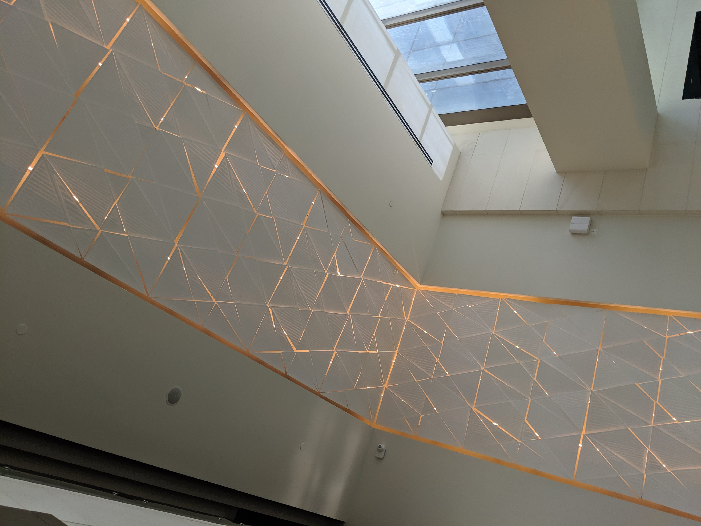
Ciudad de México — Porte Cochère
Cadenas de aluminio caen del techo como enredaderas, acentuando la verticalidad del espacio. La repetición de los eslabones crea un ritmo que suaviza la arquitectura y la acerca a algo más orgánico. La luz viaja a través de cada cadena, cambiando ligeramente con el movimiento y el ángulo.
Aluminio — LED

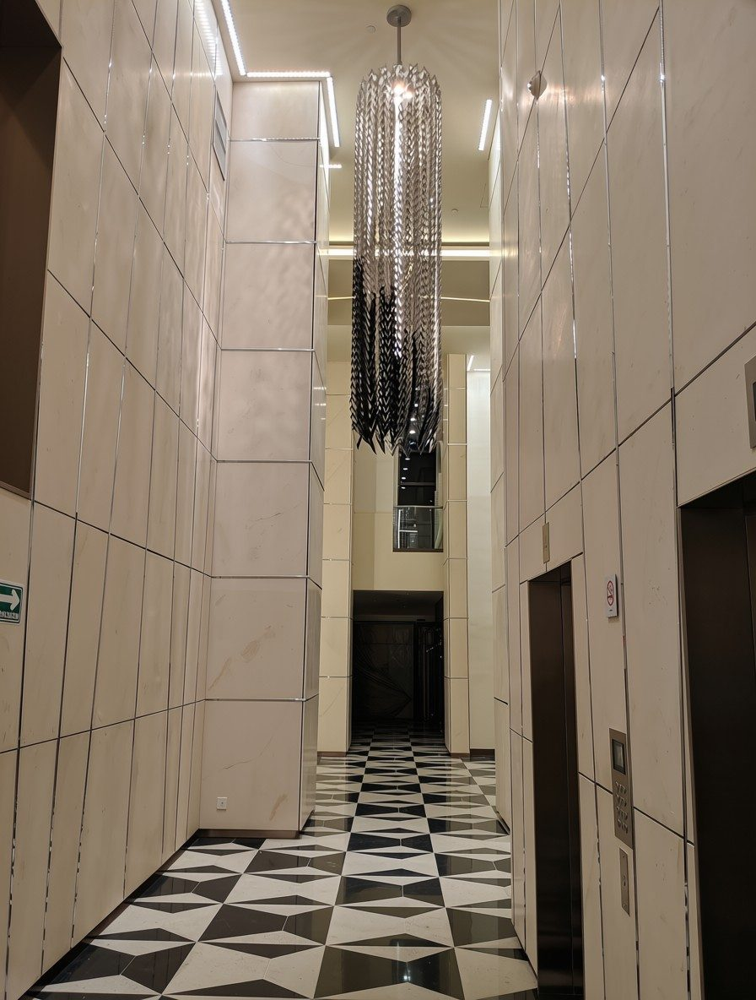
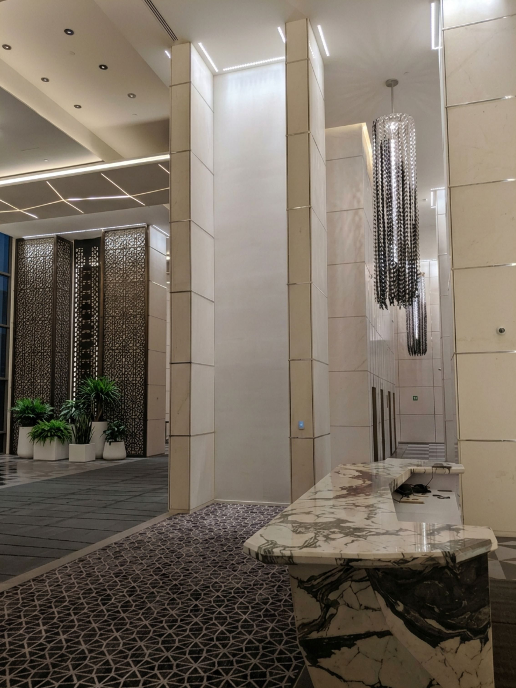

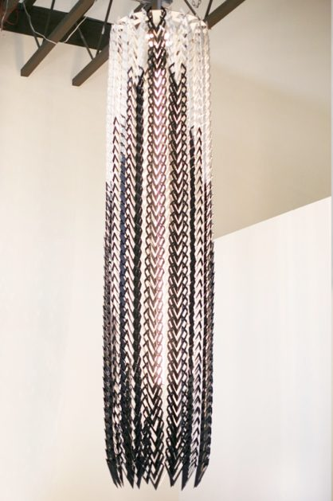

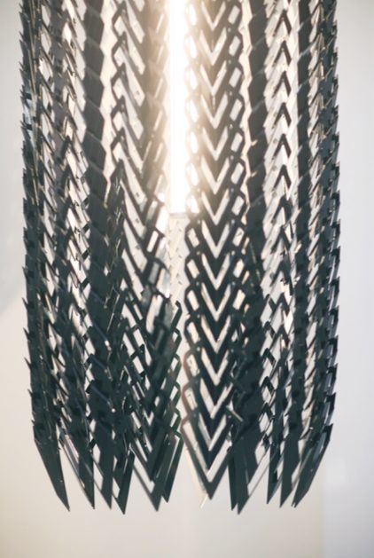
Atlanta
Atlanta fue consumida por el fuego dos veces. Sherman la redujo a cenizas en 1864. El Gran Incendio de 1917 se llevó lo que se había reconstruido. Una y otra vez, la ciudad resurgió de sus cenizas. Esta comisión es una meditación sobre esa resiliencia: brasas de vidrio soplado suspendidas en metal, atrapando y liberando luz como lo hace el fuego. Una ciudad nacida dos veces de las llamas.
Vidrio soplado — Metal

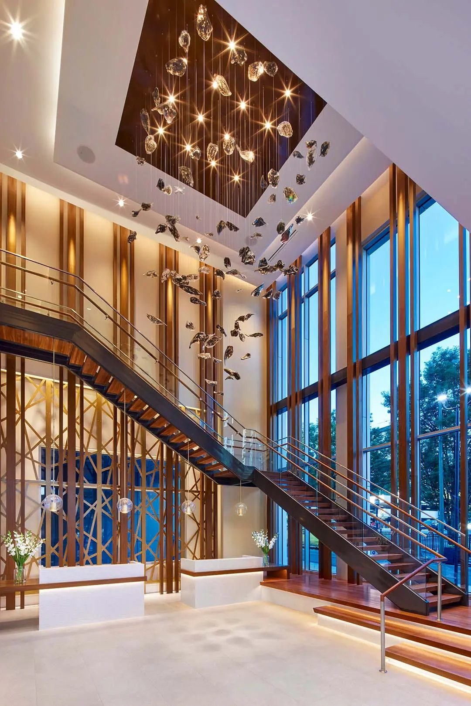
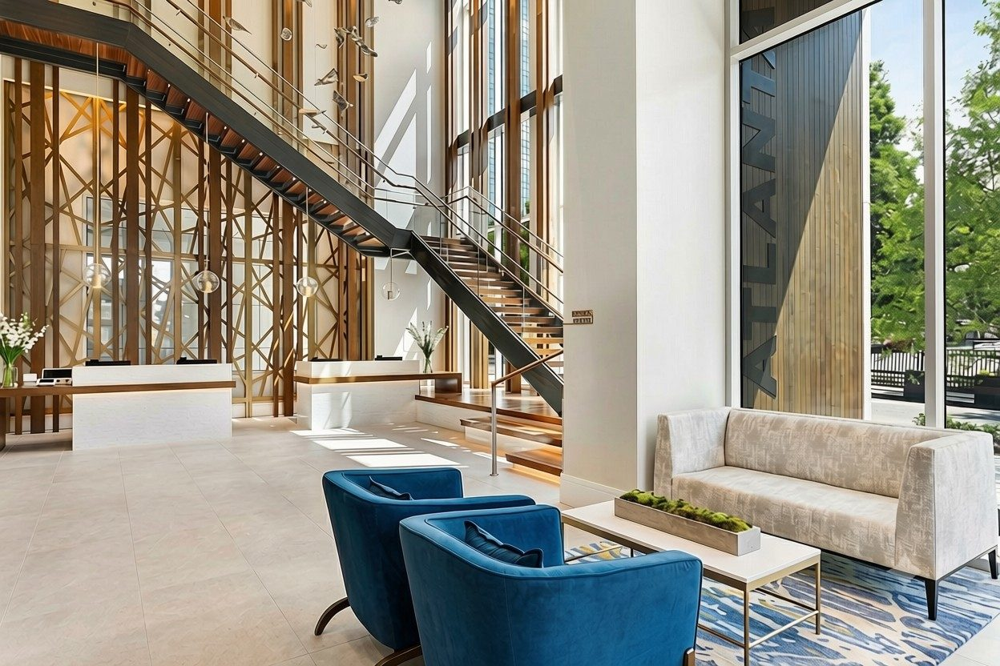
Chicago
Una constelación suspendida de bronce y vidrio, inspirada en los lenguajes visuales que dieron forma al perfil de Chicago. La geometría del Art Decó, la claridad del Mid-Century Modern, proyectadas hacia el futuro. La luz se mueve a través de cada elemento de vidrio de forma independiente, activando la composición del mismo modo que activa las calles de la ciudad.
Bronce — Vidrio — LED

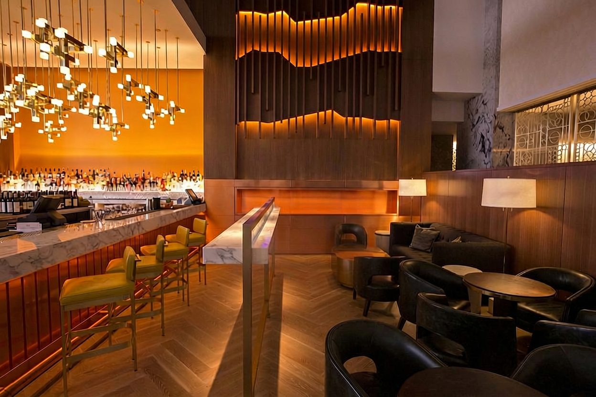

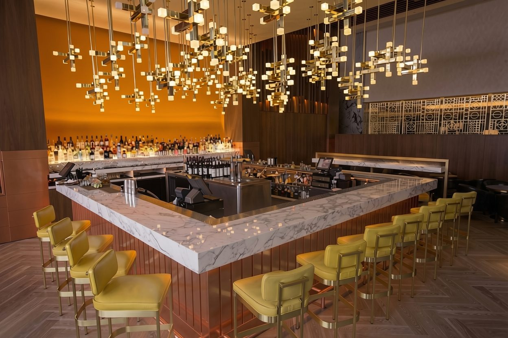